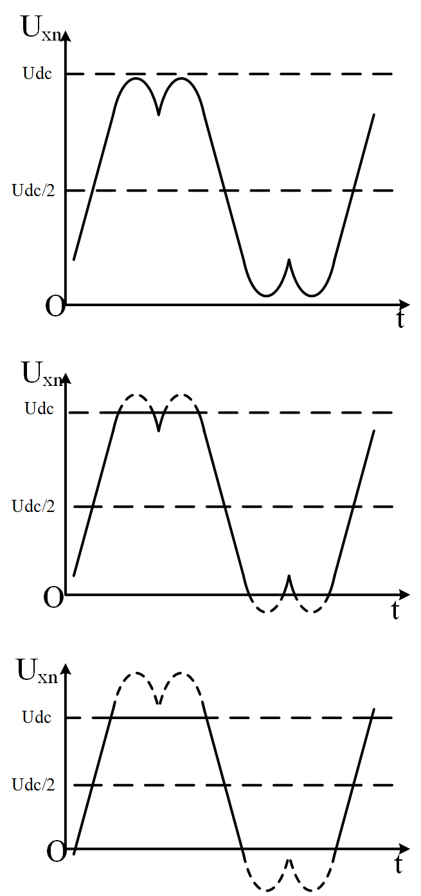

实用过调制算法
创建于2021-3-29
该项目完成于2012-8
该项目完成于2012-8
为提高变频器输出电压，可以使变频器工作在过调制区。但在过调制区时，电压波形会产生畸变，导致电流波形也发生畸变，从而引起转矩波动以及电机噪声等。为解决这些问题，需对SVPWM过调制算法进行研究，在提高电压利用率的同时，保证电能质量。为满足这个要求，特开发了一种实用的过调制方法，以下称之为“实用过调制算法”，这种方法只需在原有SVPWM程序的基础上稍加改动即可实现过调制，简单易用。
目前，常用的过调制方法主要有两大类：单模式方法和双模式方法。单模式方法将整个过调制区看为一个整体，只调整一个变量就可以实现过调制控制，实现相对简单，但输出电压谐波含量一般较高；双模式方法将过调制区分为两个区域，每个区域采用不同的算法，运算相对复杂，但输出电压谐波含量低。本次开发的“实用过调制算法”只要控制一个变量，而且整个过调制区采用了同一种处理方式，因此属于单模式方法，但通过计算可以知道，采用“实用过调制算法”输出的电压波形谐波含量低，与双模式方法相近，可以说“实用过调制算法”是一种达到双模式方法控制性能的单模式方法。
下面为不同调制比时，输出电压占空比示意图。图中，从上往下，调制比依次增大。

仿真和实验结果显示，“实用过调制方法”可以很好地实现过调制控制，而且输出的电压谐波含量较低。当调制比m<0.95时，输出电压总谐波畸变率最大值约为5%，此时电压波形仍然接近正弦，因此m<0.95时的过调制区有着较高的利用价值。